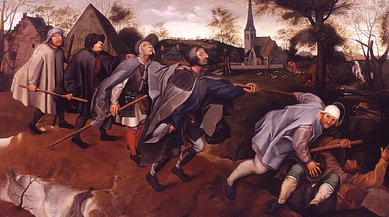

تحليل اللوحة: "مَثَل العميان" لبيتار بريقال
التمهيد
قد لا نختلف في الغايات بقدر اختلافنا في السبل إليها. فالسعادة أو الحرية أو الكرامة أو الخلاص هي من الغايات التي قد تعبّر، من فرط تداخلها، عن نفس المقصد. كما تمثّل هذه الغايات قاسما مشتركا تلتقي حوله الشعوب فيما وراء اختلافاتها، لكن المؤكّد أنّ السبيل لبلوغ هذه الغايات موضع تباين وسجال فما يعدّه البعض طريقا نحو الخلاص يعدّه البعض الآخر طريقا نحو الضياع. وهو ما يحتّم النظر في الدوافع التي تحفزنا على الفعل وفي مصداقية الأشخاص الذين يرشدوننا السبيل، حتّى نكون أقدر على التمييز بين الحقائق والأوهام وأقدر على الاستقلالية في النظر.
اللوحة الفنية

"مَثَل العميان" (Parabole des aveugles)
رسم: بيتار بريقال الأكبر
المدرسة: الفن الفلمندي - المدرسة الشمالية
النوع: لوحة دينية
الأبعاد: 1.70 م × 1.22 م
التاريخ: حوالي 1568
المعطيات التاريخية والثقافية
السياق التاريخي:
عَرفت المرحلة التاريخية التي عاش فيها الرسّام "بيتار بريقال" ظاهرة العُميان الذين يتجمّعون في مجموعات صغيرة للتسوّل ويجوبون المدن بحثا عن المحسنين.
السياق الديني:
تستمد لوحة "مثل العُميان" جذورها من قصة دينية مسيحية بإنجيل متّى، مفادها أنّ فرقة دينية من اليهود تُدْعَى بـ "الفريسيين" (Pharisiens) وتعني اشتقاقا المتظاهرين بالتقوى توجّهوا إلى النبي عيسى للتبرّم من بعض أصحابه الذين يأكلون دون غسل أيديهم وينتهكون بذلك التقاليد. فردّ النبي عيسى قائلا إنّ نجاسة الإنسان لا تتأتّى مما يدخل من الفم إلى البطن وإنّما مما يأتي من القلب ويخرج من الفم فمعه تأتي الأفكار الخبيثة والجرائم وانتهاك المحارم والسرقات والشهادات الباطلة ... وعندما عَلِم النبي عيسى أنّ "الفريسيين" اغتاظوا من كلامه قال: "أتركوهم وشأنهم، إنّهم عُميان يقودون عُميانًا، وإذا قاد أعمى أعمى آخر، فإنّهما يقعان معا في جبّ."
جدول المؤشّرات التشكيلية
| بعض المؤشّرات التشكيلية | المهام: ألاحظ ثم أُحدّد الدلالة |
|---|---|
| الصورة جبهية (Frontale) وشاملة (Panoramique). | موضوعية التعبير وواقعيته. |
| تقابل حركة وسكون بين المشهد الأمامي والمشهد الخلفي | اقتران الحركة بالسقوط يكشف عن دلالتها الكارثية. فماذا عن السكون إذن ؟ ... |
| تقابل آخر بين إضاءة في المشهد الخلفي وعتمة الألوان والعيون في المشهد الأمامي. | ثمّة ضرب من المفارقة في هذا التقابل لعلّه يدعّم التقابل بين الحركة والسكون. أذكرها. |
| حركة العميان من اليسار إلى اليمين في شكل مکافئ و کل منھم مسك بالآخر. | الشكل المكافئ انحداري و ... |
| العميان لا يتّجهون صوب الكنيسة الموجودة في المشهد الخلفي. | عندما أربط بين الكنيسة والنور الذي يحيط بها من ناحية و ... أستنتج أنّ ... |
| جسم سقط في الهاوية وجسم يُدير وجهَهُ باتّجاهِ المُشاهد وهو يوشك على السقوط. | إذا كان السقوط دالا على مصير هؤلاء فلعلّ من يدير وجهه باتجاهك يريد أن ... |
| ما هو المؤشّر التشكيلي الدال عليه ؟ | هناك أمل في الخلاص. |
| تابع رصد مؤشّرات تشكيلية أخرى ... | |
| الرسالة المباشرة للوحة في ضوء ظرفيتها التاريخية. أجمع مؤشّراتي التشكيلية وأحاول استخلاص الرسالة أو الحكمة ... | الرسالة الكونية للوحة (1) فيما وراء حدود الزمان والمكان. ماذا عن الرسالة أو الحكمة لو تأتّى للفنّان أن يرسمها اليوم ؟ ما الذي أفعله لو كان بإمكاني أن أعيد تركيب بعض عناصر اللوحة ؟ |
الرسام

هامش
عبّرت الإنسانية عن الفكرة التي تعكسها اللوحة بسبل متعدّدة ولكنها تتقاطع في التأكيد على كونيتها، ونحن نقرأ في كتاب الغزالي *ميزان العمل* قوله: "جانب الالتفات إلى المذاهب، واطلب الحق بطريق النظر ... ولا تكن في صورة أعمى تُقلِّد قائدا يرشدك إلى طريق وحواليك ألف مثل قائدك ينادون عليك، بأنّه أهلكك وأضلّك عن سواء السبيل. وستعلم في عاقبة أمرك ظلم قائدك، فلا خلاص إلاّ في الاستقلال."
تحليل اللوحة
الأطروحة الأساسية:
تطرح لوحة "مَثَل العميان" لأبي بريقال فكرة عميقة حول قيادة الجاهلين والتبعية العمياء. تعبر اللوحة عن نقد اجتماعي وديني للفريسيين الذين يزعمون القيادة وهم في الحقيقة عميان لا يبصرون الطريق الصحيح. ترمز اللوحة إلى خطر اتباع قيادات فاقدة للبصيرة، حيث يؤدي ذلك إلى الهلاك الجماعي.
التكوين الفني والدلالات:
يمثل التكوين الفني في اللوحة قصة رمزية بصرية عميقة. فالمشهد الأمامي يصور مجموعة من العميان يتقدمهم قائد أعمى، وهم يسيرون في خط متعرج ينتهي بهم إلى السقوط في جدول مائي. هذا التكوين المكافئ الانحداري يرمز إلى مسار الحياة الخاطئ الذي يقود إلى الهلاك. أما المشهد الخلفي فيظهر كنيسة مضاءة بنور السماء، مما يشكل تبايناً صارخاً مع الظلام الذي يحيط بالعميان. هذا التباين بين النور والظلام، بين الحركة والسكون، بين الانحدار والاستقرار، يعمق الدلالة الفلسفية للوحة.
الرموز والدلالات:
تحمل اللوحة العديد من الرموز العميقة. فالعُميان يرمزون إلى البشر الذين يفتقدون البصيرة الروحية والفكرية، ويتبعون قيادات عمياء. القائد الأول الذي سقط في الماء يرمز إلى النهاية المحتومة للقيادة الجاهلة. الكنيسة في الخلفية ترمز إلى المصدر الحقيقي للهداية والنور. التباين بين الألوان الداكنة في المقدمة والألوان المضيئة في الخلفية يرمز إلى الفرق بين طريق الضلال وطريق الهداية. حركة العميان من اليسار إلى اليمين ترمز إلى مسار الحياة الخاطئ الذي ينتهي بالهلاك.
الدلالات الكونية والمعاصرة:
تمثل اللوحة رسالة كونية تتجاوز حدود الزمان والمكان. ففكرة اتباع القيادات العمياء والانقياد الأعمى للتقليد والرأي السائد لا تزال حاضرة في عصرنا الحالي. في عالمنا المعاصر، قد نجد "عُمياناً" جدداً يقودون مجتمعات نحو الهاوية، سواء كانوا سياسيين يفتقدون الرؤية، أو مفكرين يروجون لأفكار متطرفة، أو إعلاميين يضللون الجماهير. الرسالة الأساسية التي تقدمها اللوحة هي ضرورة الاستقلالية في التفكير والنظر، وعدم الانقياد الأعمى لأي قائد أو فكرة دون تمحيص ونقد. كما تؤكد على أهمية البحث عن مصادر النور الحقيقية في الحياة، ممثلة في المعرفة والعقل والقيم الإنسانية الأصيلة.